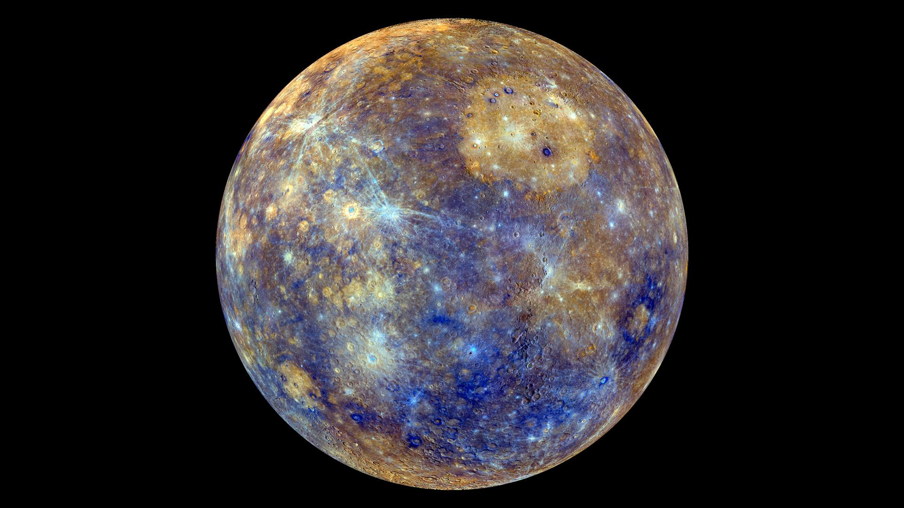
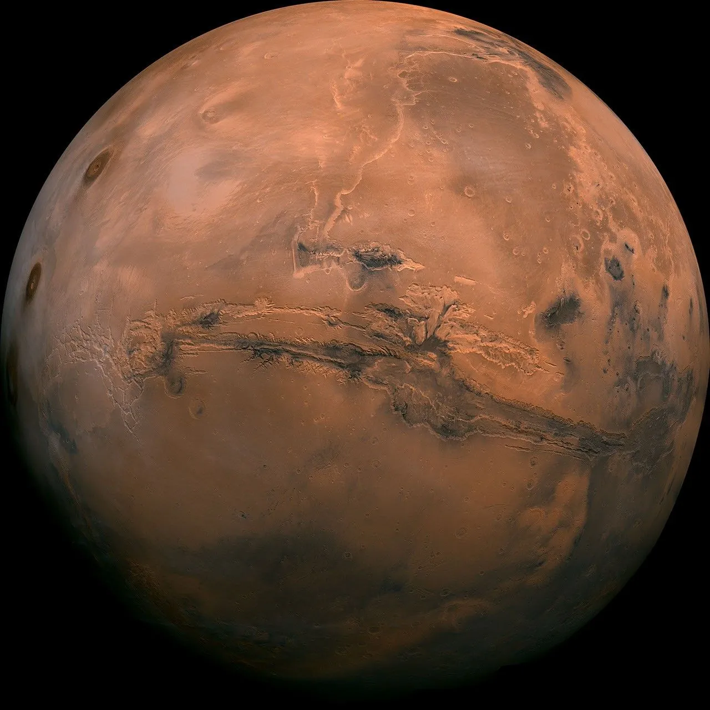
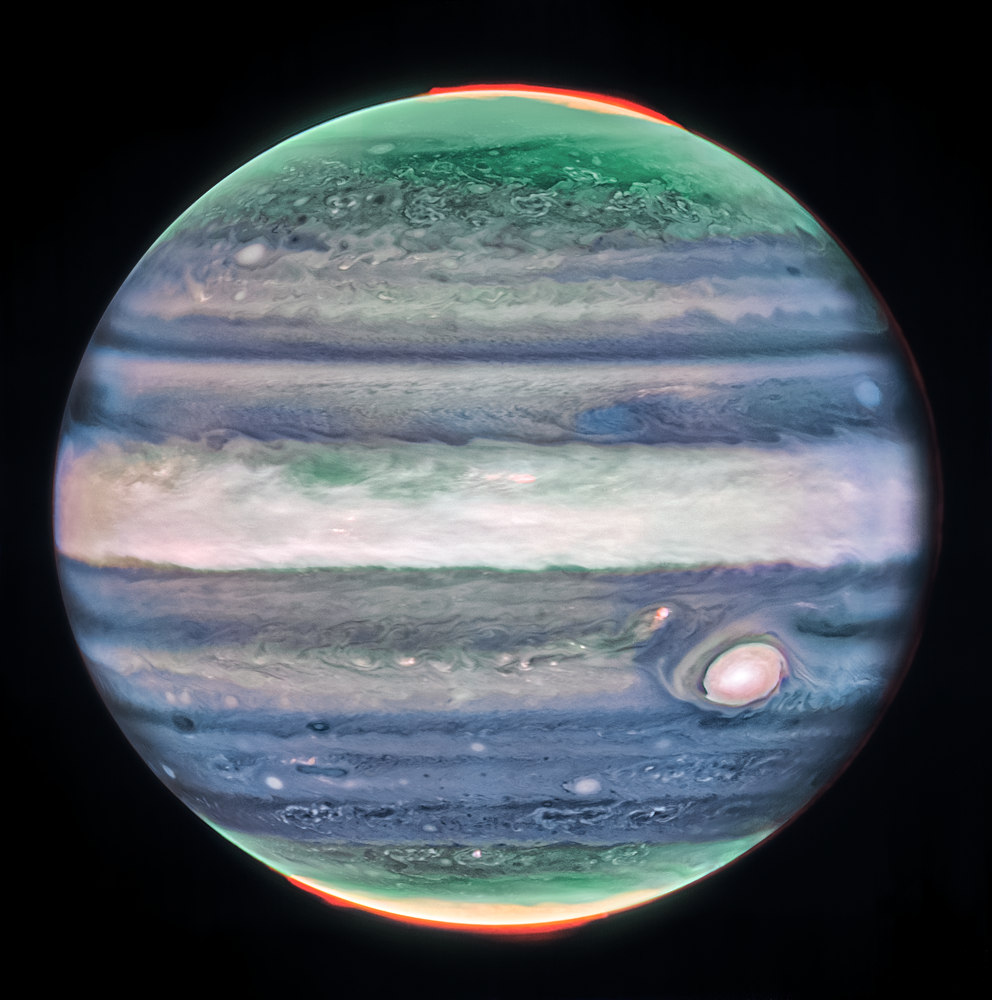
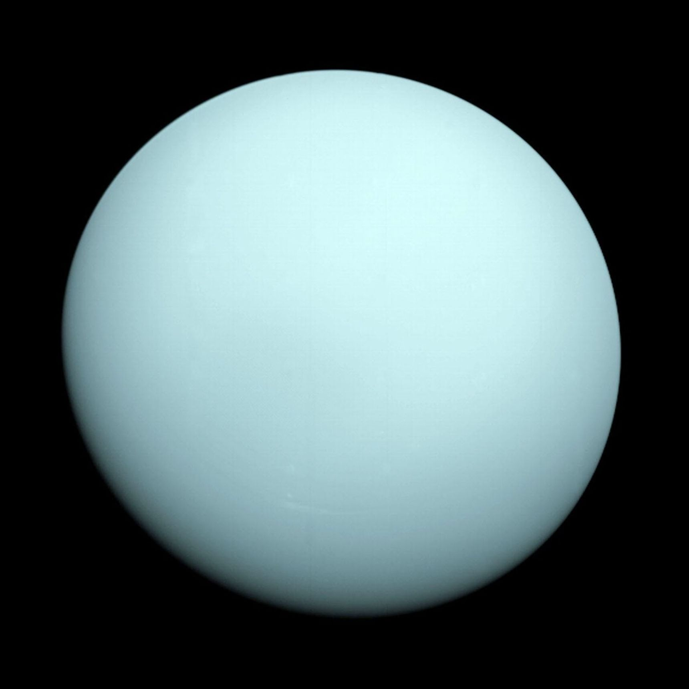
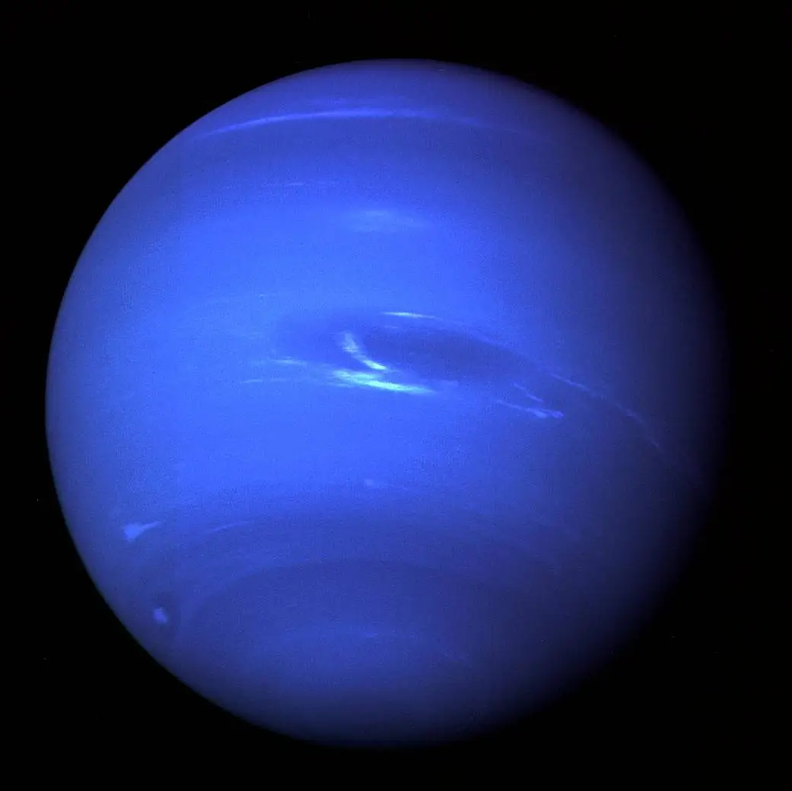

Our Solar System
Our solar system contains eight planets, dozens of moons, asteroid belts, dwarf planets, and countless mysteries waiting to be explored. Click on the planets below to learn more about each one and the unique features that make them fascinating worlds in our cosmic neighborhood.
☿ Mercury

Mercury is the closest planet to the Sun and the smallest in our solar system. Its surface is covered in craters, and it experiences extreme temperature changes because it has almost no atmosphere.
♀ Venus

Venus is the second planet from the Sun and is often called Earth's "sister planet" due to its similar size and composition. However, it has a thick, toxic atmosphere that creates a runaway greenhouse effect, making it the hottest planet in our solar system.
⊕ Earth

Earth is the third planet from the Sun and the only known planet to support life. It has a diverse climate, abundant water, and a protective atmosphere that shields it from harmful solar radiation.
♂ Mars

Mars is the fourth planet from the Sun and is often called the "Red Planet" due to its iron oxide-rich surface. It has the largest volcano and canyon in the solar system and is a prime target for future human exploration.
♃ Jupiter

Jupiter is the largest planet in our solar system and is known for its Great Red Spot, a giant storm that has been raging for centuries. It has a strong magnetic field and dozens of moons, including the volcanic Io and the icy Europa.
♄ Saturn

Saturn is the second-largest planet in our solar system and is famous for its stunning ring system, which is made up of ice and rock particles. It has over 80 moons, including Titan, which has a thick atmosphere and liquid methane lakes.
♅ Uranus

Uranus is the seventh planet from the Sun and is unique for its tilted axis, which causes it to rotate on its side. It has a faint ring system and 27 known moons, with a cold atmosphere composed mainly of hydrogen and helium.
♆ Neptune

Neptune is the eighth and farthest planet from the Sun in our solar system. It has a deep blue color due to methane in its atmosphere and is known for its strong winds and storms, including the Great Dark Spot.